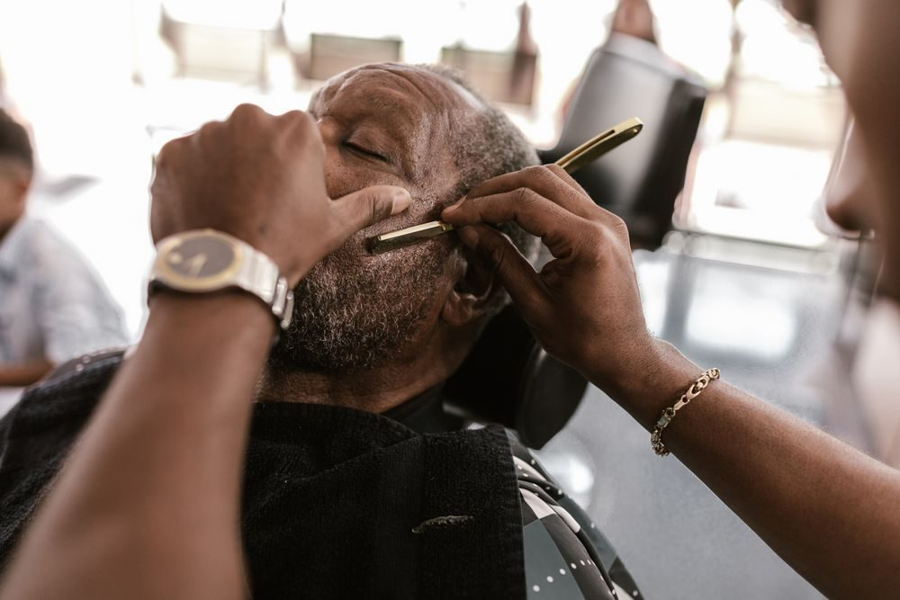

About
A small-town barbershop in Abbot Village serving the Piscataquis County area with classic cuts.
Visit & Contact
Phone
(207) 343-1686
Service area
Abbot, ME 04406
Hours
Tue–Fri 8:30 AM–4 PM
Sat 8 AM–12 PM
Sun–Mon Closed
Services & Prices

Illustrative photo
- Men's haircuts
- Flat tops
- Women's cuts
Prices aren't published online — call for current prices.
Reviews
Sample reviews for this demo — your real customer reviews would go here.
★★★★★“Great cut, friendly atmosphere, and I was in and out quickly. Wouldn't go anywhere else.”
— Sample review
★★★★★“Always leave looking sharp. Clean shop and easygoing conversation every visit.”
— Sample review